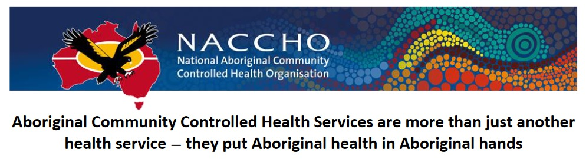

Original Blackboard item · _7400149_1
In this week’s tutorial we will explore how approximately 150 Aboriginal Community Controlled Health Organisations provide PHC and HP services that are culturally safe, accessible, and acceptable healthcare services for Indigenous Peoples across Australia.
The first Australian Aboriginal Controlled Medical Service (AMS) was opened at Redfern, NSW in 1971. The primary health care approach adopted by Redfern and other early Aboriginal Community Controlled Health Organisations (ACCHOs) was innovative and mirrored international trends at the time for accessible, effective, appropriate, needs-based health care with a prevention and social justice focus (National Aboriginal Community Controlled Health Organisation, 1992-2022). The opening of Redfern AMS pre-dated and foreshadowed the World Health Organizations’ Alma-Ata 1978 Declaration on Primary Health Care, which stated:
The existing gross inequality in the health status of the people particularly between developed and developing countries as well as within countries is politically, socially and economically unacceptable and is, therefore, of common concern to all countries.
— (WHO, 1978)
In view of this, the Australian Aboriginal Community Controlled Health movement can be viewed as world leaders in addressing the healthcare needs of vulnerable and disadvantaged peoples in First World nations.
Before you come to this week’s final Tutorial, try to access this Factsheet showcasing the history, origins and ongoing work of ACCHOs:
Link to National Aboriginal Community Controlled Health Organisation (NACCHO) website – Aboriginal health in Aboriginal hands

Complete the reading below via MyReadings:
Gomersall et al., 2017 - What Indigenous Australian clients value about primary health care: a systematic review of qualitative evidence
This reading centres Indigenous client voices to explain what culturally safe, accessible, and appropriate primary health care looks like in practice, highlighting why Aboriginal Community Controlled Health Organisations are not simply alternatives to mainstream services, but fundamentally different models grounded in community control and relational care.
Drawing on this review, reflect on how Indigenous clients describe accessibility, cultural safety, and quality care.
Reference at least one synthesised finding and consider implications for your own discipline or service context.
Aboriginal Community Controlled Health Services are more than just another
health service — they put Aboriginal health in Aboriginal hands
We are around for the long haul — commitment and continuity are required to close the gap
Our first members have been around since the very early 1970s. Our roots are deep. We have
endured as a high quality, clinically accredited community controlled service for over forty years. As
the health system becomes more complex, the role of our services becomes even more critical. The
Indigenous population is also increasing rapidly, yet funding levels have not kept pace with
demand.
We punch above our weight:
Aboriginal controlled health services provide about three million episodes of care each year for
about 350,000 people. In very remote areas, our services provided about one million episodes of
care in 2015-16.1
Our customers trust us with their health
Our services build ongoing relationships to give continuity of care so that chronic conditions are
managed and preventative health care can be effectively targeted. Studies have shown that
Aboriginal controlled health services are 23% better at attracting and retaining Aboriginal clients
than mainstream providers.2 Through local engagement and a proven service delivery model, our
clients ‘stick’. The cultural safety in which we provide our services is a key factor of our success.
More people are using Aboriginal controlled health services. It is reported that in the 24 months to
June 2015, our services increased their primary health care services, with the total number of
clients rising by 8% (from 316,269 to 340,299).3 A map showing the footprint of our clients is
attached.
We are proven to be clinically effective
As recently reported in the Australian Health Review (March 2017), we are more effective than
other health services at improving Indigenous health.4 Our services specialize in providing
comprehensive primary care consistent with our clients’ needs. This includes: home and site visits;
provision of medical, public health and health promotion services; allied health, nursing services;
assistance with making appointments and transport; help accessing child care or dealing with the
justice system; drug and alcohol services; and providing help with income support. This is funded by
both State and Australian Governments.
1
AIHW. Aboriginal and Torres Strait Islander Health Organisations: Online Services Report, 2015-16 (Report
no. 8). Canberra: 2016.
2
Department of Health. Aboriginal and Torres Strait Islander Health Performance Framework. Canberra
2017: 172; Ong, K. S. et al. ‘Differences in Primary Health Care Delivery to Australia’s Indigenous Population:
a Template for Use in Economic Evaluations’, BMC Health Services Research. 2012: 307
3
AIHW. Healthy Futures—Aboriginal Community Controlled Health Services: Report Card 2016 (Cat. no. IHW
171). Canberra: 2016.
4
Campbell, M.A. et al. Contribution of the Aboriginal Community-Controlled Health Services to Improving
Aboriginal Health: an Evidence Review, Australian Health Review (http://www.publish.csiro.au/ahr [6 March
2017]).
We provide value for money
Aboriginal controlled health services are cost-effective. Our activities result in greater health
benefits per dollar spent; measured at a value of $1.19:$1. The lifetime health impact of
interventions delivered by our services is 50% greater than if these same interventions were
delivered by mainstream health services, primarily due to improved Indigenous access. 5
All revenue is re-invested into our health services. There is no profit-taking. We reinvest in our
Indigenous workforce and in locally-designed strategies to trial new approaches. We are part of
Indigenous communities and understand how critical respectful community engagement is to
improving health outcomes.
We have a high level of community oversight and accountability. Our boards are made up of local
Indigenous people and we serve our communities. We are responsive to their needs and they are
not shy to tell us to lift our game, if we disappoint. We have innovative, robust and flexible service
models grounded in the culture of our people and contemporary primary health care practices.
Governments and communities have invested in the sector and have grown it over time — it is a
valuable health asset
Our community controlled health services are an integral part of the Australian health system just
as hospitals are. An exemption under section 19(2) of the Health Insurance Act 1973 allows
Aboriginal controlled health services access to Commonwealth funding, even if they are funded by
state governments.6 This flexibility allows all parties to work closely together to provide the full
service offer and get the best outcomes according to local need and circumstances.
There are many examples of important partnerships between our services and mainstream
providers working collaboratively to maximize impact. For example, in Western NSW, the roll-out of
a new partnership saw the number of Aboriginal people using integrated care services for chronic
conditions more than double in the space of just four months.7
The health system is increasingly complex in nature and the dire state of Indigenous health has
meant that Aboriginal people need to have control over their own health response and be part of
the solution. We work closely with mainstream services to extend the reach of services and share
our expertise to improve cultural safety. While governments struggle to deliver service models that
rarely reach or effectively service the needs of the most vulnerable Aboriginal people, we excel.
That’s because we are Aboriginal people who understand what is required to change the future
health of our people and we deliver it.
Most of our staff are Indigenous, but we need more Indigenous clinical staff
Our network provides a critical and practical pathway into employment for many Indigenous
people. Currently, 56% of our staff are Indigenous. The greater representation is amongst non-
clinical staff. Much more needs to be done to develop viable career pathways to get more
Indigenous doctors, nurses and allied health professionals. Across Australia, there are only about
170 Indigenous medical practitioners, 730 allied health professionals, and 2,190 nurses.8
5
Vos, T. et al. Assessing Cost Effectiveness in Prevention (Final Report 2010); Ong, K. S. et al. Ibid.
6
https://www.mja.com.au/system/files/issues/205_06/10.5694mja16.00593.pdf.
7
https://ahha.asn.au/news/western-nsw-primary-health-network-shows-what-works-delivering-effective-
aboriginal-health.
8
Department of Health, Aboriginal and Torres Strait Islander Health Performance Framework, 2017.
Source: Healthy Futures
We are the largest employer of Indigenous people
Our 141 Aboriginal controlled health services employ about 6,000 staff (most of whom are
Indigenous). This means that one out of every 44 Indigenous jobs in Australia is with one of our
services (3,300 of 141,400 FTE: 2.33%). This puts us well ahead of all mining employers. This is in a
context where the health and social care sector employs 15% of the Aboriginal and Torres Strait
Islander workforce; almost four times as many as the mining industry (4%).9
Our large network of services is also critical to the economic health of many remote and local
communities.
9
The Australia Institute, Is the mining industry the largest Indigenous employer? 2013.
The need is compelling
Good progress has been made, but Indigenous health is still vulnerable to disturbing developments
such as the recent outbreak of congenital syphilis across regions of Northern Australia. This is an
entirely preventable disease not seen in Australia for generations and its occurrence raises
concerns about the delivery of antenatal care and sexually transmitted infection and blood borne
virus control programs for all high risk groups.
Source: Australian Institute of Health and Welfare 2016. Healthy Futures—Aboriginal Community
Controlled Health Services: Report Card 2016. Cat. no. IHW 171. Canberra: AIHW. p72